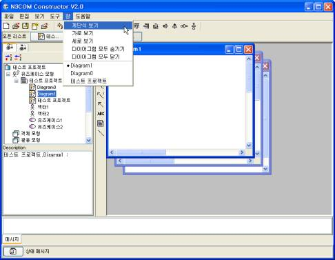
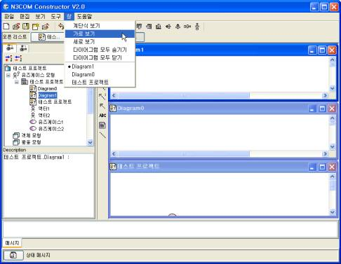
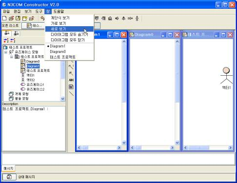

통합 GUI는 사용자의 편의성을 고려하여 작업 중인 윈도우들에 대한 정렬기능을 제공한다. 계단형 정렬, 가로 정렬, 세로 정렬을 제공하며, 빠른 윈도우 찾아가기 기능을 제공하여 작업 윈도우의 관리를 사용자가 편하게 할 수가 있다.
 그림 2.1-2 보기 옵션 메뉴 및 설명
 그림 2.1-2 브라우징 윈도우가 숨겨진 화면
 그림 2.1-2 툴바와 다이어그램 패널만 보여진 화면